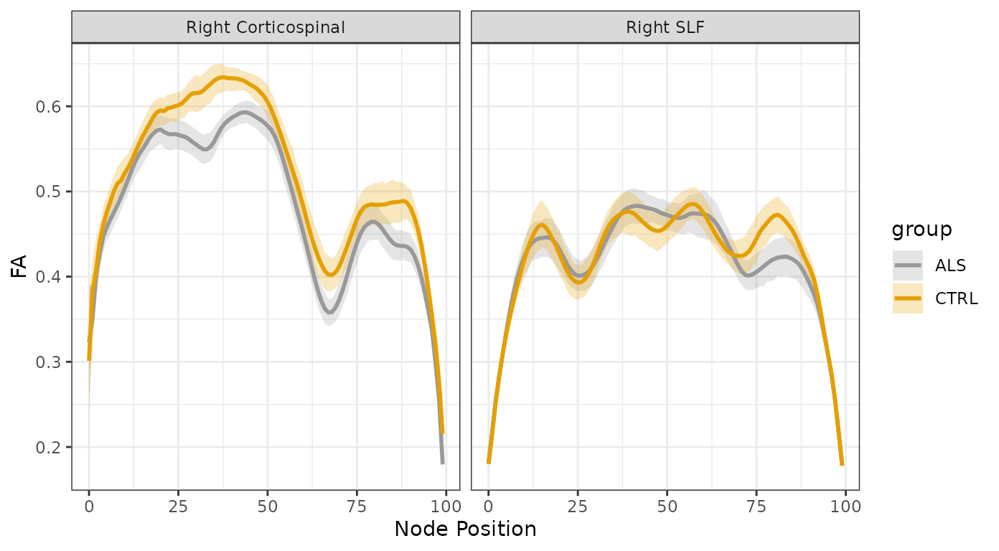
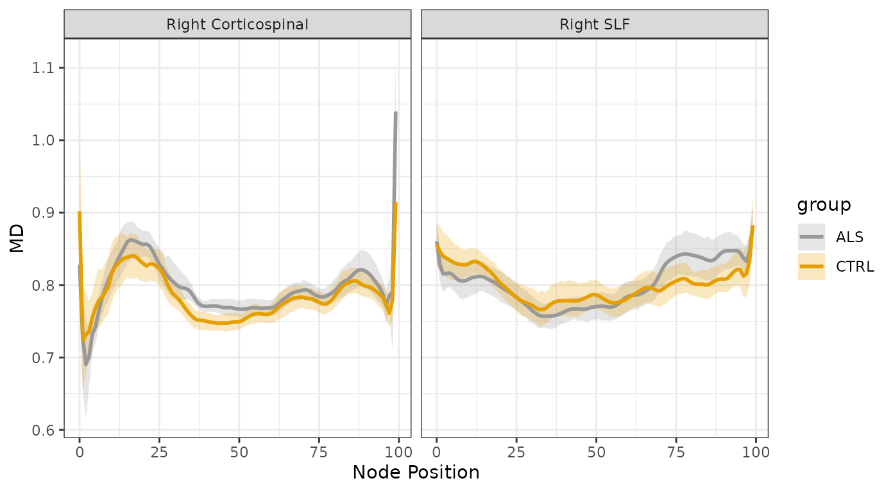

Fitting Generalized Additive Models (GAMs)
Source:vignettes/tractable-single-tract.Rmd
tractable-single-tract.RmdThis vignette demonstrates the use of GAMs for statistical analysis of tract profile data. The data we will use here contains tract profiles from diffusion MRI measurements in a group of patients with Amyotrophic Lateral Sclerosis (ALS) and a group of matched controls (Sarica et al. 2017).
We start by loading the tractable library:
Next, we will use a function that is included in
tractable to read this dataset directly into memory.
Importantly, both the group (“ALS” or “CTRL”) and the subject identifier (“subjectID”) need to be factors for subsequent analysis to work properly.
df_sarica <- read_afq_sarica(na_omit = TRUE)
df_sarica
#> # A tibble: 93,377 × 8
#> subjectID tractID nodeID fa md age group gender
#> <fct> <chr> <dbl> <dbl> <dbl> <dbl> <fct> <fct>
#> 1 subject_000 Left Thalamic Radiation 0 0.174 0.965 54 ALS F
#> 2 subject_000 Left Thalamic Radiation 1 0.227 0.912 54 ALS F
#> 3 subject_000 Left Thalamic Radiation 2 0.282 0.874 54 ALS F
#> 4 subject_000 Left Thalamic Radiation 3 0.318 0.851 54 ALS F
#> 5 subject_000 Left Thalamic Radiation 4 0.341 0.830 54 ALS F
#> 6 subject_000 Left Thalamic Radiation 5 0.353 0.812 54 ALS F
#> 7 subject_000 Left Thalamic Radiation 6 0.357 0.802 54 ALS F
#> 8 subject_000 Left Thalamic Radiation 7 0.357 0.795 54 ALS F
#> 9 subject_000 Left Thalamic Radiation 8 0.359 0.790 54 ALS F
#> 10 subject_000 Left Thalamic Radiation 9 0.371 0.784 54 ALS F
#> # ℹ 93,367 more rowsFirst, let’s visualize the data. We use the
plot_tract_profiles function, selecting to view both
fractional anisotropy (FA) and mean diffusivity profiles in two tracts:
the right corticospinal tract (CST) and the right superior longitudinal
fasciculus (SLF), which are identified in the “tractID” column of this
dataset.
plot_handles <- plot_tract_profiles(
df = df_sarica,
y = c("fa", "md"),
tracts = c("Right Corticospinal", "Right SLF"),
group_col = "group",
save_figure = FALSE
)
plot_handles$fa
plot_handles$md
We can already see that ALS has a profound effect on the tract
profiles of the CST, but does not affect SLF as much. We will use GAMs
in order to quantify this in statistical terms. We start by fitting a
GAM model to the data from the CST. Using the
tractable_single_tract function, we select the Right CST
data, and focus here only on FA. We use “group” and “age” as relevant
covariates. Comparing group as a main effect, that will also be used to
fit separate smooth functions for each category of subjects. The
mgcv GAM functions use a parameter k to
determine how many spline functions to use in fitting the smooth change
of FA over the length of the tract. We use an automated strategy to find
k.
cst_fit <- tractable_single_tract(
df = df_sarica,
tract = "Right Corticospinal",
target = "fa",
regressors = c("age", "group"),
node_group = "group",
k = "auto"
)
cst_summary <- summary(cst_fit)
cst_summary
#>
#> Family: gaussian
#> Link function: identity
#>
#> Formula:
#> fa ~ age + group + s(nodeID, by = group, bs = "fs", k = 9) +
#> s(subjectID, bs = "re")
#>
#> Parametric coefficients:
#> Estimate Std. Error t value Pr(>|t|)
#> (Intercept) 0.422545 0.056591 7.47 9.8e-14 ***
#> age 0.000858 0.000915 0.94 0.348
#> groupCTRL 0.035936 0.015961 2.25 0.024 *
#> ---
#> Signif. codes: 0 '***' 0.001 '**' 0.01 '*' 0.05 '.' 0.1 ' ' 1
#>
#> Approximate significance of smooth terms:
#> edf Ref.df F p-value
#> s(nodeID):groupALS 7.97 8 445.5 <2e-16 ***
#> s(nodeID):groupCTRL 7.96 8 534.8 <2e-16 ***
#> s(subjectID) 42.42 46 29.9 <2e-16 ***
#> ---
#> Signif. codes: 0 '***' 0.001 '**' 0.01 '*' 0.05 '.' 0.1 ' ' 1
#>
#> R-sq.(adj) = 0.562 Deviance explained = 56.7%
#> fREML = -13623 Scale est. = 0.0012706 n = 4734Examining the summary of the resulting GAM fit object shows us that
the k = 16 is sufficiently large to describe the spatial
variation of tract profile data. In addition, we see that there is a
statistically significant effect of group (with a p-value of 0.0244) and
no statistically significant effect of age (p = 0.3483).
Running the same analysis on the data from SLF, we see that there is no significant difference between the groups in this tract, indicating that the effect observed in CST is rather specific to this tract.
slf_fit <- tractable_single_tract(
df = df_sarica,
tract = "Right SLF",
target = "fa",
regressors = c("age", "group"),
node_group = "group",
k = "auto"
)
slf_summary <- summary(slf_fit)
slf_summary
#>
#> Family: gaussian
#> Link function: identity
#>
#> Formula:
#> fa ~ age + group + s(nodeID, by = group, bs = "fs", k = 9) +
#> s(subjectID, bs = "re")
#>
#> Parametric coefficients:
#> Estimate Std. Error t value Pr(>|t|)
#> (Intercept) 0.4126030 0.0249891 16.51 <2e-16 ***
#> age 0.0000153 0.0004033 0.04 0.97
#> groupCTRL 0.0063865 0.0073081 0.87 0.38
#> ---
#> Signif. codes: 0 '***' 0.001 '**' 0.01 '*' 0.05 '.' 0.1 ' ' 1
#>
#> Approximate significance of smooth terms:
#> edf Ref.df F p-value
#> s(nodeID):groupALS 7.98115 8 468 <2e-16 ***
#> s(nodeID):groupCTRL 7.98013 8 493 <2e-16 ***
#> s(subjectID) 0.00012 45 0 1
#> ---
#> Signif. codes: 0 '***' 0.001 '**' 0.01 '*' 0.05 '.' 0.1 ' ' 1
#>
#> R-sq.(adj) = 0.624 Deviance explained = 62.5%
#> fREML = -15118 Scale est. = 0.0015159 n = 4785This is in line with other work that we have conducted with this dataset using other methods (Richie-Halford et al. 2021).
If you are interested in exploring the ALS dataset even more, you can also see this data in an AFQ-Browser here (Yeatman et al. 2018).